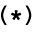
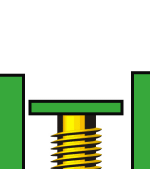
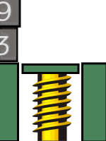
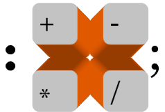
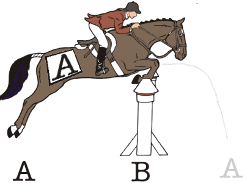

In this chapter, we'll dive right into some specifics that you need to know before we go on. Specifically, we'll introduce some of the arithmetic instructions besides + and some special operators for rearranging the order of numbers on the stack, so that you'll be able to write mathematical equations in Forth.
Here are the four simplest integer-arithmetic operators in Forth:
| + | ( n1 n2 -- sum ) | Adds. |
| - | ( n1 n2 -- diff ) | Subtracts (n1-n2). |
| * | ( n1 n2 -- prod ) | Multiplies. |
| / | ( n1 n2 -- quot ) | Divides (n1/n2). |
Unlike calculators, computer terminals don't have special keys for multiplication or division. Instead we use * and /.
In the first chapter, we learned that we can add two numbers by putting them both on the stack, then executing the word +, then finally executing the word . (dot) to get the result printed at our terminal.
17 5 + . 22 ok
We can use this method with all of Forth's arithmetic operators. In other words, we can use Forth like a calculator to get answers, even without writing a "program." Try a multiplication problem:
7 8 * . 56 ok
By now we've seen that the operator comes after the numbers. In the case of subtraction and division, though, we must also consider the order of numbers ("7 - 4" is not the same as "4 - 7").
Just remember this rule:
To convert to postfix, simply move the operator to the end of the expression:
| Infix | Postfix |
|---|---|
| 3 + 4 | 3 4 + |
| 500 - 300 | 500 300 - |
| 6 x 5 | 6 5 * |
| 20 / 4 | 20 4 / |
So to do the subtraction problem:
7 - 4 =simply type in
7 4 - . 3 ok
If you're one of those people who like to fool around and figure things out
for themselves without reading this book, then you're bound to discover a couple of weird things. First
off, as we told you, these operators are integer operators. That not only means that you
can't do calculations with decimal values, like
10.00 2.25 +it also means that you can only get integer results, as in 21 4 / . 5 ok instead of 5.25 ok Another thing is that if you try to multiply: 10000000 1000 * .or some such large numbers, you'll get a crazy answer. So we're telling you up front that with the operators introduced so far and with . to print the results, you can't have any numbers that are higher than +2147483647 or lower than -2147483648. Numbers within this range are called "single-length signed numbers." Notice, in the list of Forth words a few pages back, the letter "n," which stands for "number." Since Forth uses single-length numbers more often than other types of numbers, the "n" signifies that the number must be single-length. And yes, there are other operators that extend this range ("double-length" operators, which are indicated by "d"). All of these mysteries will be explained in time, so stay tuned. |
The order of numbers stays the same. Let's try a division problem:
20 4 / . 5 ok
The word / is defined to divide the second number on the stack by the top number.
What do you do if you have more than one operator in an expression, like:
4 + (17 * 12)you ask? Let's take it step-by-step: the parentheses tell you to first multiply seventeen by twelve, then add four. So in Forth you would write:
17 12 * 4 + . 208 okand here's why:
 17 and 12 go onto the stack. * multiplies them and returns the result.
Then the four goes onto the stack, on top of 204. + rolls out the adding machine and adds them together, returning only the result.
Or suppose you want to add five numbers. You can do it in Forth like this:
17 20 + 132 + 3 + 9 + . 181 ok
 Now here's an interesting problem:
(3 + 9) * (4 + 6)
To solve it we have to add three to nine first, then add four to six, then finally multiply the two sums. In Forth, we can write
3 9 + 4 6 + * . 120 okThe picture at the right is showing what happens.
Notice that we very conveniently saved the sum twelve on the stack while we went on about the business of adding four to six.
Remember that we're not concerned yet with writing definitions. We are simply using Forth as a calculator.
If you're like most beginners, you probably would like to try your hand at a few practice problems until you feel more comfortable with postfix.
Convert the following infix equations to postfix "calculator style." For example,
ab + cwould become
a b * c +
 In Chap. 1 we saw that we could define new words in terms of numbers and other pre-defined words. Let's explore some further possibilities, using some of our newly-learned math operators.
Let's say we want to convert various measurements to inches. We know that
1 yard = 36 inchesand
1 foot = 12 inchesso we can define these two words:
: YARDS>IN 36 * ; ok : FT>IN 12 * ; okwhere the names symbolize "yards-to-inches" and "feet-to-inches." Here's what they do:
10 YARDS>IN . 360 ok 2 FT>IN . 24 okIf we always want our result to be in inches, we can define:
: YARDS 36 * ; ok : FEET 12 * ; ok : INCHES ; ok
So that we can use the phrase
10 YARDS 2 FEET + 9 INCHES + . 393 ok
Notice that the word INCHES doesn't do anything except remind the human user what the nine is for. If we really want to get fancy, we can add these three definitions:
: YARD YARDS ; ok : FOOT FEET ; ok : INCH ; okso that the user can enter the singular form of any of the nouns and still get the same result:
1 YARD 2 FEET + 1 INCH + . 61 ok 2 YARDS 1 FOOT + . 84 ok
| In mathematics, the word "argument" refers to an independent variable of a function. Computer linguists have borrowed this term to refer to numbers being operated on by operators. They have also borrowed the word "parameters" to describe pretty much the same thing. |
So far we have only defined words whose definitions contain a single math operator. But it's perfectly possible to put many operators inside a definition, if that's what you need to do.
Let's say we want a word that computes the sum of five numbers on the stack. A few pages back we summed five numbers like this:
17 20 + 132 + 3 + 9 + . 181 ok
But we can also enter
17 20 132 3 9 + + + + . 181 ok
We get the same answer, even though we've clustered all the numbers into one group and all the operators into another group. We can write our definition like this:
: 5#SUM + + + + ; okand execute it like this:
17 20 132 3 9 5#SUM . 181 ok
If we were going to keep 5#SUM for future use, we could enter it into our ever-growing glossary, along with a note that it "expects five arguments" on the stack, which it will add together.
|
If a jet plane flies at an average air speed of 600 mph and if it flies with a tail wind of
25 mph, how far will it travel in five hours? If we define : FLIGHT-DISTANCE + * ;we could enter 5 600 25 FLIGHT-DISTANCE . 3125 okTry it with different values, including head winds (negative values). |
Here is another equation to write a definition for:
(a + b) * c
As we saw in Quizzie 2-a, this expression can be written in postfix as
c a b + *
Thus we could write our definition
: SOLUTION + * ; okas long as we make sure that we enter the arguments in the proper order;
c a b SOLUTION
Convert the following infix expressions into Forth definitions and show the stack order required by your definitions. Since this is Quizzie 2-b, you can name your definitions 2B1, 2B2, etc.
The word / is Forth's simplest division operator. Slash supplies only the quotient; any remainder is lost. If you type:
22 4 / . 5 ok
You get only the quotient five, not the remainder two.
If you're thinking of a pocket calculator's per-cent operator, then five is not the full answer.
But / is only one of several division operators supplied by Forth to give you the flexibility to tell the computer exactly what you want it to do.
For example, let's say you want to solve this problem: "How many dollar bills can I get in exchange for 22 quarters?" The real answer, of course, is exactly 5, not 5.5. A computerized money changer, for example, would not know how to give you 5.5 dollar bills.
Here are two more Forth divsion operators:
| /MOD | ( n1 n2 -- rem quot ) | Divides. Returns the remainder and quotient. |
|
| MOD | ( n1 n2 -- rem ) | Returns the remainder from division. |
|
These operators are both signed, and "truncating." We'll see what this means in the chapter on computer numbers.
/MOD gives both the remainder and the quotient; MOD (from "modulo") gives the remainder only. (For /MOD, the stack notation in the table indicates that the quotient will be on top of the stack, and the remainder below. Remember, the rightmost represents the topmost.)
Let's try the first one:
22 4 /MOD . . 5 2 ok
With what we've learned so far, we can easily define this word:
: QUARTERS 4 /MOD . ." ones and " . ." quarters " ;
So that you can type:
22 QUARTERSwith this result:
22 QUARTERS 5 ones and 2 quarters ok
The second word in the table, MOD, leaves only the remainder. For example in:
22 4 MOD . 2 okthe two is the remainder.
If you worked Prob. 6 in the last set, you discovered that the infix equation
(a - b) / ccannot be solved with a definition unless there is some way to rearrange values on the stack.
Well, there is a way: by using a "stack manipulation operator" called SWAP.
The word SWAP is defined to switch the order of the top two stack items.
As with the other stack manipulation operators, you can test SWAP at your terminal in "calculator style"; that is, it doesn't have to be contained within a definition.
First enter
1 2 . . 2 1 okthen again, this time with SWAP:
1 2 SWAP . . 1 2 ok
Thus Prob. 6 can be solved with this phrase:
- SWAP /with ( c a b -- ) on the stack.
Let's give a, b, and c these test values:
a = 10 b = 4 c = 2then put them on the stack and execute the phrase, like so:
2 10 4 - SWAP / . 3 ok
Here is a list of several stack manipulation operators, including SWAP
| SWAP | ( n1 n2 -- n2 n1 ) | Reverses the top two stack items. |
|
| DUP | ( n -- n n ) | Duplicates the top stack item. |
|
| OVER | ( n1 n2 -- n1 n2 n1 ) | Makes a copy of the second item and pushes it on top. |
|
| ROT | ( n1 n2 n3 -- n2 n3 n1 ) | Rotates the third item to the top. |
|
| DROP | ( n -- ) | Discards the top stack item. |
|
The next stack manipulation operator on the list, DUP, simply makes a second copy (duplicate) of the top stack item.
For example, if we have "a" on the stack, we can compute:
a2as follows:
DUP *in which the following steps occur:
| Operation | Contents of stack |
|---|---|
| a | |
| DUP | a a |
| * | a2 |
Now somebody tells you to evaluate the expression:
a * (a + b)given the following stack order:
( a b -- )
But, you say, I'm going to need a new manipulation operator: I want two copies of the "a," and the "a" is under the "b." Here's the word you need: OVER. OVER simply makes a copy of the "a" and leapfrogs it over the "b":
( a b -- a b a )
 Now the expression
a * (a + b)can easily be written
OVER + *
Here's what happens:
| Operation | Contents of stack |
|---|---|
| a b | |
| OVER | a b a |
| + | a (b+a) |
| * | a*(b+a) |
When writing equations in Forth, it's best to "factor them out" first. For example, if somebody asks you to evaluate:
a2 + abin Forth, you'll find it quite complicated (and maybe even impossible) using the words we've introduced so far ... unless you factor out the expression to read:
a * (a + b)which is the expression we just evaluated so easily.
The fourth stack manipulator on the list is ROT (pronounced rote), which is short for "rotate." ROT transforms the top three stack values from ( a b c ) to ( b c a ).
For example, if we need to evaluate the expression:
ab - bcwe should first factor out the "b"s:
b * (a - c)
Now if our starting-stack order is this:
( c b a -- )we can use:
ROT - *in which the following steps will occur:
| Operation | Contents of stack |
|---|---|
| c b a | |
| ROT | b a c |
| - | b (a-c) |
| * | b*(a-c) |
The final stack manipulation operator on the list is DROP. All it does is discard the top stack value.
Pretty simple, huh? We'll see some good uses for DROP later on.
|
Beginners who are just learning to manipulate numbers on the stack in useful ways very often find themselves typing a series of dots to see what's on the stack after their manipulations. The problem with dots, though, is that they don't leave the numbers on the stack for future manipulation. The Forth word .S prints out all the values that happen to be on the stack "non-destructively"; that is, without removing them. Let's test it, first with nothing on the stack: .S <0> okAs you can see, in this version of .S, we see at least one number. This is the number of items actually on the stack. Now let's try with numbers on the stack: 1 2 3 .S <3> 1 2 3 ok ROT .S <3> 2 3 1 ok |
a b c becomes c b a
a b c becomes c a b
(n+1) / n ( n -- result )
x(7x + 5) ( x -- result )
9a2 - ba ( a b -- result )
The next four stack manipulation operators should look vaguely familiar:
| 2SWAP | ( d1 d2 -- d2 d1 ) | Reverses the top two pairs of numbers. |
|
| 2DUP | ( d -- d d ) | Duplicates the top pair of numbers. |
|
| 2OVER | ( d1 d2 -- d1 d2 d1 ) | Makes a copy of the second pair of numbers and pushes it on top. |
|
| 2DROP | ( d -- ) | Discards the top pair of numbers. |
|
The prefix "2" indicates that these stack manipulation operators handle numbers in pairs. The letter "d" in the stack effects column stands for "double." "Double" has a special significance that we will discuss when we talk about "n" and "u."
The "2"-manipulators listed above are so straightforward, we won't even bore you with examples.
One more thing: there are still some stack manipulators we haven't talked about yet, so don't go crazy by trying too much fancy footwork on the stack.
Here's a list of the Forth words we've covered in this chapter:
| + | ( n1 n2 -- sum ) | Adds. |
| - | ( n1 n2 -- diff ) | Subtracts (n1-n2). |
| * | ( n1 n2 -- prod ) | Multiplies. |
| / | ( n1 n2 -- quot ) | Divides (n1/n2). |
| /MOD | ( n1 n2 -- rem quot ) | Divides. Returns the remainder and quotient. |
| MOD | ( n1 n2 -- rem ) | Returns the remainder from division. |
| SWAP | ( n1 n2 -- n2 n1 ) | Reverses the top two stack items. |
| DUP | ( n -- n n ) | Duplicates the top stack item. |
| OVER | ( n1 n2 -- n1 n2 n1 ) | Makes a copy of the second item and pushes it on top. |
| ROT | ( n1 n2 n3 -- n2 n3 n1 ) | Rotates the third item to the top. |
| DROP | ( n -- ) | Discards the top stack item. |
| 2SWAP | ( d1 d2 -- d2 d1 ) | Reverses the top two pairs of numbers. |
| 2DUP | ( d -- d d ) | Duplicates the top pair of numbers. |
| 2OVER | ( d1 d2 -- d1 d2 d1 ) | Makes a copy of the second pair of numbers and pushes it on top. |
| 2DROP | ( d -- ) | Discards the top pair of numbers. |
| | |
|---|---|
| Double-length numbers | integers which encompass a range of over -18,446,744,073,709,551,615 to +18,446,744,073,709,551,615 (and which we'll introduce officially in Chap. 7). |
| Single-length numbers | integers which fall within the range of -2 billion to +2 billion: the only numbers which are valid as the arguments or results of any of the operators we've discussed so far. |
| | |

( 1 2 3 4 -- 4 3 2 1 )[answer]
( 1 2 3 -- 1 2 3 1 2 3 )[answer]
CONVICTED-OF ARSON HOMICIDE TAX-EVASION ok WILL-SERVE 35 years okor any series of crime beginning with the word CONVICTED-OF and ending with WILL-SERVE. Use these sentences
HOMICIDE 20 years ARSON 10 years BOOKMAKING 2 years TAX-EVASION 5 years[answer]